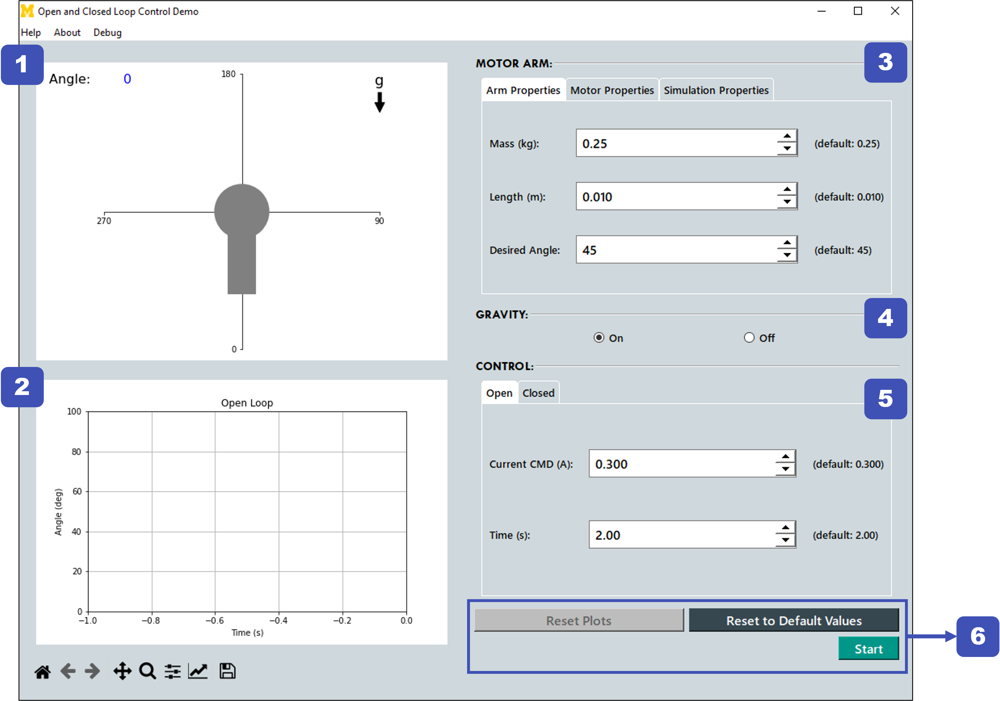

Using the Interface

-
Motor Arm Plot: Displays the motor arm angle changes over time once the simulation has started.
-
Open/Closed Loop Plot: Displays the loop angle output over time once the simulation has started. The title will change based on whether the Open or Closed Loop is selected. Below the Loop Plot is a toolbar that can be used to zoom, scroll, save, and change the plot display settings.
-
Motor Arm Settings: Contains settings for the Motor Arm Plot including Arm Properties, Motor Properties, and Simulation Properties. These settings will be used by both the Open and Closed Loop systems.
-
Gravity Setting: Turns gravity on or off. The Motor Arm Plot will display a "g" in the top right corner if gravity is on.
-
Control Settings: Contains the settings for the Open and Closed Loop systems.
- Unlike the Motor Arm Settings, the settings in each tab will only be used for that system (for example: the settings in the "Closed" tab will only be used for the Closed Loop system).
- To switch between systems, simply select the tab with the desired system. The Open/Closed Loop Plot will display the title of the currently selected system.
-
Simulation buttons:
-
Reset Plots: After running a simulation, click this button to reset the plots to their original states. This button is disabled until a simulation has been run.
-
Reset to Default Values: Resets all inputs to their default values. The default values can be seen next to each input box.
-
Start/Stop: Starts and stops the simulation. Clicking "Start" will reset the plots to their original states before running the simulation.